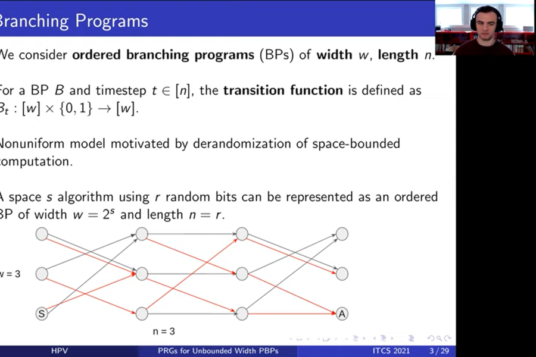

Pseudorandom Generators for Unbounded-Width Permutation Branching Programs
By William M. Hoza, Edward Pyne, and Salil Vadhan
Read the paper: ECCC • ITCS proceedings
Abstract (for specialists)
We prove that the Impagliazzo-Nisan-Wigderson (STOC 1994) pseudorandom generator (PRG) fools ordered (read-once) permutation branching programs of unbounded width with a seed length of \(\widetilde{O}(\log d + \log n \cdot \log(1/\varepsilon))\), assuming the program has only one accepting vertex in the final layer. Here, \(n\) is the length of the program, \(d\) is the degree (equivalently, the alphabet size), and \(\varepsilon\) is the error of the PRG. In contrast, we show that a randomly chosen generator requires seed length \(\Omega(n \log d)\) to fool such unbounded-width programs. Thus, this is an unusual case where an explicit construction is "better than random."
Except when the program's width \(w\) is very small, this is an improvement over prior work. For example, when \(w = \text{poly}(n)\) and \(d = 2\), the best prior PRG for permutation branching programs was simply Nisan's PRG (Combinatorica 1992), which fools general ordered branching programs with seed length \(O(\log(wn/\varepsilon) \log n)\). We prove a seed length lower bound of \(\widetilde{\Omega}(\log d + \log n \cdot \log(1/\varepsilon))\) for fooling these unbounded-width programs, showing that our seed length is near-optimal. In fact, when \(\varepsilon \leq 1 / \log n\), our seed length is within a constant factor of optimal. Our analysis of the INW generator uses the connection between the PRG and the derandomized square of Rozenman and Vadhan (RANDOM 2005) and the recent analysis of the latter in terms of unit-circle approximation by Ahmadinejad et al. (FOCS 2020).
Not-so-abstract (for curious outsiders)
⚠️ This summary might gloss over some important details.
A "pseudorandom generator" is an algorithm that makes a few coin tosses and outputs a long sequence of bits \(x_1, x_2, x_3, \dots\) that "appear random" in some sense. In this paper, we present a pseudorandom generator that is designed for the following type of scenario. Imagine a machine \(A\) that reads the bits \(x_1, x_2, \dots\) one at a time, in order. Each time it reads a bit, \(A\) updates its internal state. The only assumption we make is that \(A\) is "reversible," meaning there exists a machine \(B\) such that if \(B\) starts in \(A\)'s final state and \(B\) reads the same bits in backward order, then \(B\) passes through the exact same sequence of states (in backward order). Under this assumption, we prove that when \(A\) reads the output of our generator, the probability that it ends up in any particular state is approximately the same as if \(x_1, x_2, \dots\) were truly random bits. Our generator is "near-optimal" in terms of the number of coin tosses it makes.
We posted a manuscript online in September 2020; I presented the paper at ITCS in January 2021. (Ted made the prerecorded video for ITCS.) The ITCS proceedings version and the ECCC version are the same except for formatting.
Expository material:
Video of my live Zoom presentation at ITCS (January 2021). (Start at 3:09:00.) Here are the slides from that presentation.
An exposition of the paper is included in my PhD dissertation (Section 5.1).
[Video] Ted's prerecorded presentation for ITCS (January 2021).
☢️ Errata:
- (February 2021) The proof of Corollary 2.6 is not correct. See Corollary 5.1.17 in my PhD dissertation for a corrected version, and similarly see Claim 5.1.14 in my PhD dissertation for a corrected version of Theorem 3.8 in the paper. The main results of the paper are unaffected.
What others think:
- Oded Goldreich discusses the paper in this blog post.